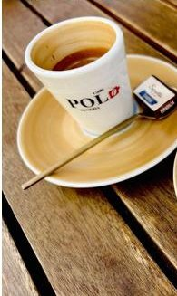
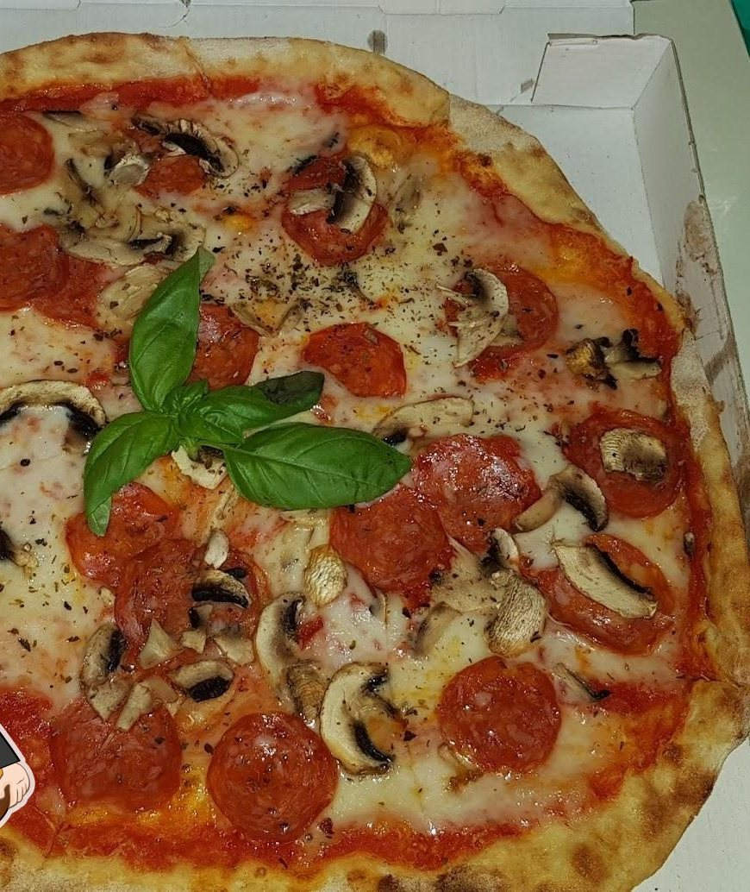
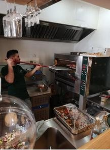
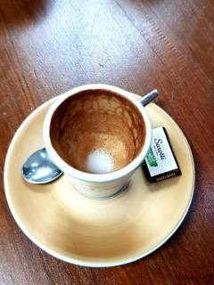
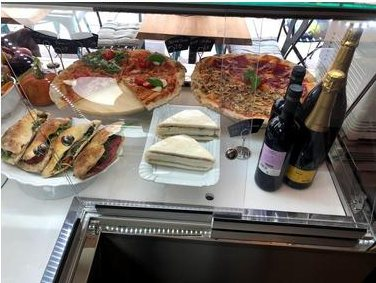
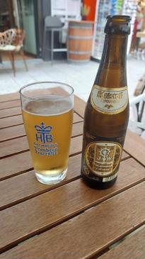

01
Caffè
Espresso, Cappuccino oder ein Caffè zum Mitnehmen. Am Fenster oder draußen mit Blick auf die Weißenburger Straße.

Öffnungszeiten
Eine kleine Pizza Bar an der Weißenburger Straße. Draußen grüne Schirme, drinnen der Ofen. Man kann bleiben oder sich ein Stück für unterwegs holen.
Willkommen bei Antica
Bei Antica gibt es eine kurze Karte mit fairen Preisen. Die Pizza kommt mit dünnem Boden und luftigem Rand aus dem Ofen. Dazu gibt es Pide, die türkische Schwester der Pizza, gefüllt mit Käse, Spinat, Sucuk oder Pastırma.
Den Caffè kann man an der Bar trinken. Im Sommer sitzt man unter den grünen Schirmen oder im überdachten Holz-Schanigarten an der Weißenburger Straße.



grazie mille ♥
Caffè · Pizza · Bar
Der Name steht groß auf dem Schild. Antica ist Caffè, Pizzeria und Bar zugleich.

Espresso, Cappuccino oder ein Caffè zum Mitnehmen. Am Fenster oder draußen mit Blick auf die Weißenburger Straße.

In der Vitrine liegen Pizza am Stück, belegte Panini, Tramezzini und Salate. Alles gibt es auch zum Mitnehmen.

Am Abend gibt es ein bayerisches Bier, ein Glas Wein, einen Aperol oder einen Grappa zum Abschluss. Mitten in Haidhausen.
Heute:
Stück Pizza
to go
Direkt aus der Vitrine, für unterwegs zum Ostbahnhof.
Galleria
Alle Bilder sind Schnappschüsse von Gästen. Zum Vergrößern einfach antippen.
Gäste-Stimmen
„Wir haben nur ein paar Pizzen to go geholt, und das ca. um 21 Uhr. Der Besitzer war trotzdem sooo nett, hat uns super beraten und die Pizzen waren mega lecker! Es gab sogar einen Espresso aufs Haus!“
„Wunderbar geführtes Lokal mit schönem Ambiente. Der Chef ist super freundlich und das Team stimmt.“
„Sehr gute Speise- und Getränkekarte mit guten Preisen. Die ruhige, entspannte Atmosphäre rundet alles ab. Top.“
Vieni a trovarci
| Montag | 14:00 – 23:00 |
|---|---|
| Dienstag | 14:00 – 23:00 |
| Mittwoch | 14:00 – 23:00 |
| Donnerstag | 14:00 – 23:00 |
| Freitag | 14:00 – 23:00 |
| Samstag | 14:00 – 23:00 |
| Sonntag | Ruhetag |
An Feiertagen ist geschlossen. Ausnahmen sind möglich, im Zweifel bitte kurz anrufen.
Hunger? Ruf an und wir halten dir einen Tisch frei.
089 441 425 00